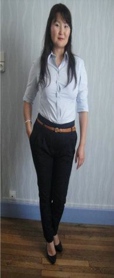

About
Mijn naam is Nara (Naranzul) Hosbayar en ik ben geboren op 01 april 1984 in Ulaanbaatar, de hoofdstad van Mongolië. Ik ben in 2000 naar Nederland gekomen om hier bij mijn grootouders te wonen. Ik heb de basisschool en de middelbare school in Mongolië afgerond. Ik moest eerst de taalcursus volgen net als alle andere nieuwkomers hier in Nederland. Het duurde twee jaar.
Ik heb toen de capaciteitentoets gemaakt om verder te gaan studeren, omdat mijn Mongoolse middelbareschooldiploma niet geaccepteerd werd. Na de toetsuitslag ben ik toegelaten tot het Vmbo-plus bij het ROC Aventus in Deventer. Ik heb de Vmbo-plus in een jaar gedaan en met succes afgerond, daarna ging ik verder naar de sprint Havo bij dat ROC. De sprint Havo heb ik in twee jaar gedaan en mijn diploma behaald in 2006.
Na mijn Havo heb ik me ingeschreven voor de Saxionopleiding bedrijfseconomie. Maar ik vond het toen een hele zware drukke tijd. Ik was altijd druk geweest, daarom besloot ik een rustiger aan doen met het studeren. Voordat ik de nieuwe opleiding zou beginnen, heb ik me weer uitgeschreven en ging ik gewoon werken. Ik heb verschillende banen gehad, zoals productie medewerker, bedieningsmedewerker, basis administratief medewerker. Toch voelde ik me niet echt gelukkig waar ik werkte.
In 2009 ging het restaurant waar ik werkte failliet. Ik kreeg een WW uitkering en was ongelukkig. Ik vond het vervelend om wekelijks te solliciteren. Dankzij de contactpersoon van CWI, Hille Jager, heb ik de draad weer opgepakt. Ik heb verschillende trajecten gevolgd en meer zelfvertrouwen gekregen. Ik geloofde er weer in dat een HBO een betere toekomst biedt. Toen besloot ik dat ik weer ging studeren, maar deze keer wilde ik Small Business & Retail Management bij Saxion gaan doen. Door mijn werkervaring ben ik meer geïnteresseerd geraakt om een eigen bedrijf te starten.
Toekomst
Sinds september 2011 zit ik in het eerste jaar en studeer ik Small Business & Retail Management. Naast mijn studie heb ik al werkervaring opgebouwd, dat ik te vinden in mijn curriculum vitae.
Ik droomde er van om een eigen oosters restaurant te openen in een grotere stad. Maar ik zie steeds meer kansen en mogelijkheden met mijn opleiding. Met mijn Mongoolse achtergrond kan ik een brug slaan tussen Mongoolse en Nederlandsen ondernemers. Zo ben ik in 2012 in contact gekomen met een Mongoolse ondernemer. Hij wil zijn bedrijf uitbreiden en graag gebruikmaken van westerse expertise. Aan de hand van zijn aanvraag ben ik op zoek gegaan naar een geschikte Nederlandse partneronderneming. Via internet ben ik in contact gekomen met het Nederlandse oud-expert bureau PUM. PUM helpt voor ondernemers in ontwikkelingslanden en zendt de experts naar die landen. Zij organiseren korte cursussen in Nederland over het ondernemen. Ik zag dit als een nieuwe uitdaging en raak hierdoor geïnspireerd. Na deze ervaring heb ik ook een aantal Mongoolse ondernemers geholpen om contact te leggen met PUM.
In de zomer van 2012 heb ik een Mongoolse vrouw, Bolor leren kennen. Zij runt een exclusieve en luxe merkwinkel in Mongolië. Zij is officieel distributeur van het Zwitserse merk Bally en Italiaanse merk Napapijri. Daarnaast koopt zij veel luxe damesmerkkleding, schoenen en accessoires in in Nederland en in Duitsland tijdens opruimingsperiodes. Vervolgens verkoopt zij dit in Mongolië door. Ik werd gevraagd of ik voor haar de inkopen wil doen zodat zij niet elke keer naar Europa hoeft te komen. Ik vond het heel leuk idee , omdat ik een zelf veel van leer en ervaring op doe op het gebied van mode en inkopen. Ik doe dit elk seizoen en verzend de ingekochte artikelen vanuit Duitsland naar Mongolië. Ik koop in verschillende Outlet Centers en in de Randstad in.
Sinds ik contact heb met deze dame zie ik de mode ook als uitdaging. Zo heb ik onder andere al (stage) praktijkervaring opgedaan bij de V&D Deventer en V&D Apeldoorn. Na mijn studie wil ik doorgaan met mode en graag een eigen winkel openen en ondernemen.
Mijn Hobby’s
Ik lees graag over ondernemen en geld verdienen. Het laatste boek dat ik gelezen heb ging over geld verdienen. De zakenman Robert Kyosakai uit de VS , heeft een boek geschreven met de titel “Rich dad and poor dad”. Dit boek heeft mij erg geïnspireerd. Ook heeft het mijn gevoel versterkt en mijn droom om een ondernemer te worden. Hij schrijft over het leven in eigen handen nemen, vanuit zijn eigen ervaringen. Hij legt ook uit dat als je van maandsalaris tot maandsalaris leeft, dat dit een “rattenleven” is. Na het lezen van dit boek heb ik me aangesloten bij de online groep; “Rich dad, poor dad”. Ik geloof dat ik van de zes regels van Robert veel kan leren om een goede ondernemer te worden.
- Rijke mensen werken niet voor geld.
- Leren het verschil te zien tussen bezittingen die geld opleveren en bezittingen die geld kosten.
- Zorg voor je eigen zaken; zorg dat je eigen bezittingen opbouwt voor na je pensioen.
- Zorg dat je financieel inzicht opbouwt. Leer de regels van de belastingen.
- Rijke mensen bedenken manieren om geld te maken.
- Werk om te leren; niet voor het geld.
Daarnaast heb ik ook een aantal andere hobby’s, zoals Mandala – tekenen, mediteren en yoga oefeningen doen. Deze helpen mij om tot rust te komen en meer energie te krijgen.

Merktemplate
De merktemplate is een handig hulpmiddel om in kaart te brengen waar je voor staat. Een merktemplate is een cirkel die is opgebouwd uit drie ringen. De binnenste ring is die van de merkessentie, de belangrijkste waarde waar een merk voor staat. De tweede ring wordt gevormd door de merkwaarden: functionele, emotionele en expressieve waarden. In de buitenste ring staan de bewijsstukken voor de merkwaarden.

Merkessentie
- Doelgericht
- Ondernemend
Ik wil graag ondernemer worden en een eigen zaak runnen. Deze droom heb mij als doel gesteld. Daarom heb ik SB&RM opleiding gekozen. Na mijn opleiding ga ik een eigen zaak runnen in de dames mode.
Functionele persoonskenmerken
- Klantgericht
- Leergierig
- Ervaring in horeca
- Ervaring in modeketen
Door het werken in de horeca en lopen van stage in warenhuizen heb ik ervaring opgebouwd in die branches. Hierdoor heb ik geleerd om klantvriendelijk te zijn met de klanten. Mijn andere belangrijke kenmerk is leergierig. Ik ben altijd leergierig geweest vanaf jonge leeftijd. In Mongolië en ook in Nederland. Daardoor ben ik zover gekomen in Nederland, om zelfs een HBO opleiding te volgen.
Emotionele persoonskenmerken;
- Oprecht
- Eerlijk
- Doorzetter
- Behulpzaam
- Spontaan
Ik ben boeddhistisch opgevoed en zelf ook boeddhist. De emotionele persoonskenmerken heb ik van mijn cultuur en religie overgenomen.
Expressieve eigenschappen
- Ordelijk
- Harde werker
- Vrouwelijk
Ik hou van ordelijk zijn en verdeel ruim van te voren in wat ik wil doen de komende tijd. Ik werk ook heel hard om mijn doelen te bereiken.
Presentatie en gedrag
Mijn activiteiten zijn:
- Familie en vrienden Mandala tekenen
- Studeren
- Lezen en online spelen over Ondernemen op de site “ Rich dad, Poor dad”
- Yoga